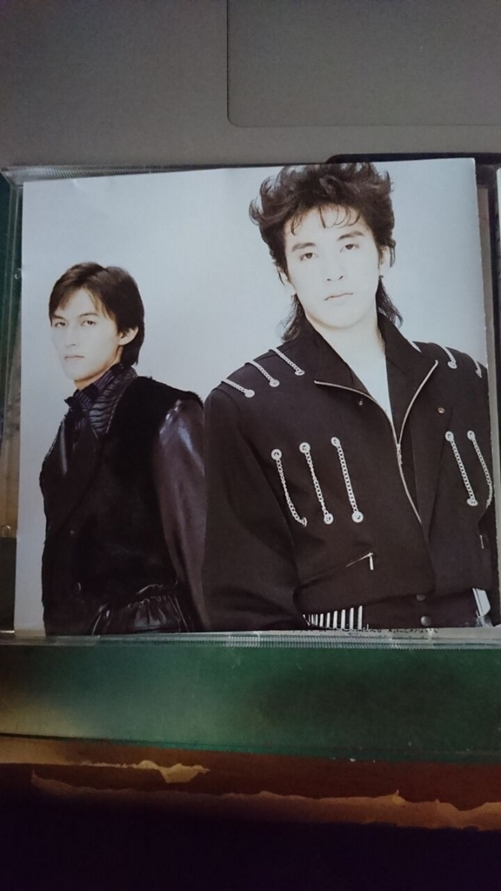

勝手にレビュー1：B'zの1stアルバム『B'z』
B’z大好きなので、2chのアルバム全曲レビュースレをパクって上から目線で彼らのアルバムを批評していきます。
今回は、B’zマニアにはいわくつきの初代アルバムです。点数は元ネタと同じく5点満点で計算します。
なお、ここに載せている文章は、僕の個人的な感想文です。間違ってもB’zマニアの総意だとは思われないよう、ご注意願います（でも今回に限ってはそうでもないかもしれません）。
点数の見方
１ / 5点：ダメダメ
2 / 5点：悪い
3 / 5点：良い
4 / 5点：非常に良い
5 / 5点：最高
B’z『B’z』1988年9月21日
1. だからその手を離して 1 / 5 点
あの偉大なるB’zの偉大なる1thシングルかつ初代アルバムのオープニングを飾る偉大なる曲です。それはもう期待でドキがムネムネってやつです。
実際に聞いてみると、現在からではとても考えられないほど硬い稲葉の声、ペラッペラの松本のメロディ、やたらと英語の多い歌詞などなどなどが炸裂してくるではありませんか。
これがB’zの曲だとは、俄かには信じがたいです。ギリギリchopとかみたいにダサカッコイイのではなく、ただただダサいです。この調子の曲が、このアルバムにあと8曲残っています。
このような酷評になりましたが、中学１年の頃の僕は「こういうのが80年代のテクノミュージックというものか〜」と、通ぶりながらこの曲を聴いておりました。ただのあほです。
あと、通称『パール盤』というB面集のようなものに、なぜか再アレンジされたものが収録されています。そちらもやはり駄曲です。
2. Half Tone Lady 1 / 5 点
メロディは1曲目よりかはだいぶかっちょいいです。
しかし、歌詞に占める英語の量が増えています。しかも「Fool for the love, half tone lady, cool down your mind」という同じフレーズばかりが繰り返されていきます。これでは歌詞におけるストーリーの展開もクソもあった話ではありません。
3. ハートも濡れるナンバー 〜Stay tonight〜 2 / 5 点
曲名から既にダサいです。
なによりダサいのが、声が硬いデビュー当時の稲葉が色気たっぷりの情感を込めて歌おうとして、しくじっているところです。こんなの聴いていたらこちらが恥ずかしくなります。
ちなみに、この曲は後に7枚目のアルバムに再アレンジされて収録されていますが、そちらは半端なくかっちょいいです。
4. ゆうべのCrying 〜This is my truth〜 1 / 5 点
3曲目と同じような感じです。特筆すべきことはなにもありません。それだけ中身のない曲ということです。
5. Nothing To Change 3 / 5 点
B’zの楽曲の中で、唯一、稲葉以外の人が歌詞を書いています。歌詞中の英語は多すぎないぐらいの程よいバランス、切ないストーリーと、当時の稲葉にまったくと言っていいほど欠けていたものが詰め込まれています。
歌詞が良いと、稲葉の歌声も松本のメロディも良く聴こえてくるから不思議です。
6. 孤独にDance in vain 1 / 5 点
5曲目とは逆に、こちらは唯一、松本以外の人による作曲です。
ラストのギターが少しかっちょいい以外は、特になにもない曲です。
7. It’s not a dream 1 / 5 点
このアルバム内で一番疾走感のある曲です。ですが、稲葉の歌詞と声がそれに追いついていません。なんとも惜しい曲です。
8. 君を今抱きたい 2 / 5 点
歌詞にもあるように、夜の雨に似合う曲です。
歌詞もメロディも割とイカしてるので、このアルバム内では結構お気に入りです。
後に、初代ミニアルバムに再アレンジされて収録されています。こうして振り返ってみると再アレンジされた曲が多いですね。それだけB’zのほうも、この黒歴史を上書きしたいってことなのでしょうか。
9. Fake Lips 1 / 5 点
頻繁に出張ってくるコーラスがいちいちダサくて失笑ものです。
「一度でいいから 僕のname チャートに入れて」という歌詞にはこれでもかというくらい哀愁が漂っています。
総評 1 / 5 点
B’zマニアの人の中で、このアルバムを他人にお勧めするような輩は存在しないと断言していいでしょう。
重度のB’zオタクは「これはこれで味がある」と言うのかもしれません。
このアルバムをまだ聴いていないB’zファンの人は、「B’zの下積み時代というのはどのようなものだったのか」という、歴史学者のような気持ちになって聴いてみればいいのではないでしょうか。
おまけ

若い（特に松本）。